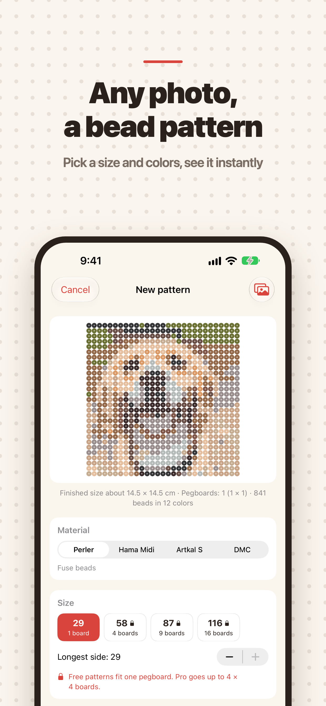

真實顏色
支援 Perler、Hama、Artkal 拼豆和 DMC 繡線，每個格子都標有真實色號。
該買多少一看便知
查看每種顏色需要的拼豆數或針數，還能複製購物清單。
依底板分塊
大圖紙依 29 × 29 的底板分塊，並用粗線標出分界。
哪一格都能改
點一下格子即可修改，也可以把某種顏色整個換成另一種。
列印後直接做
開通 Pro 即可匯出列印用 PDF：顏色清單加上逐頁的符號圖紙。
也有像素畫
把照片變成像素畫，對著 110 種範例描繪，還能製作逐格動畫。
Hantam Pro
免費版可製作一塊底板（十字繡為 40 針）以內的圖紙，最多儲存 3 個圖紙，分享的圖片會帶有小標記。Pro 版增加列印用 PDF、最大 4 × 4 塊底板或 200 針的圖紙、無限儲存、無標記圖片以及全部像素畫工具。可選擇按月或按年訂閱，也可以一次性買斷。